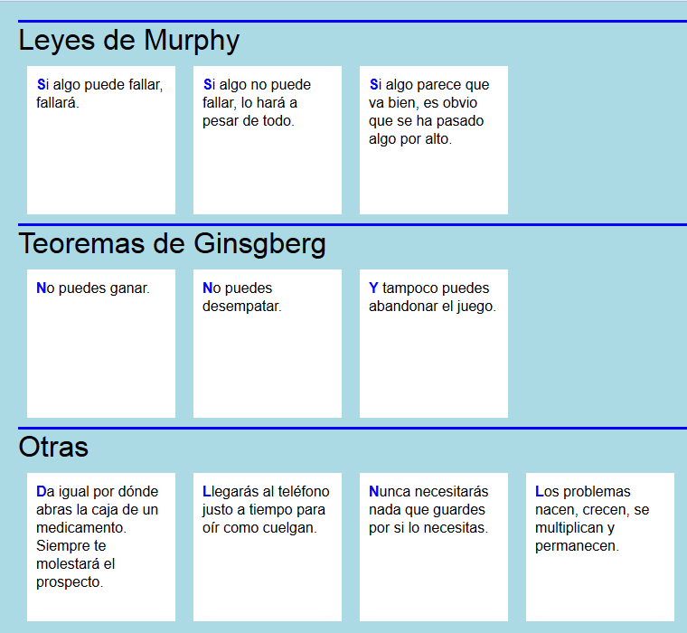

Resuelva los siguientes ejercicios guardando las respuestas en una carpeta cuyo nombre contenga su nombre y apellidos.
El siguiente documento no está bien formado porque contiene errores. Corrija los errores (si para corregir algún error hay que inventarse una etiqueta o atributo, utilice un nombre que tenga relación con la información contenida en el documento).
<?xml version="1.0" encoding="UTF-8"?>
<!-- Este documento contiene informacion sobre:
-- los nombre de los meses
-- el origen del nombre
-->
<calendario>
<meses>
<mes>
<mes espanol>Enero</espanol>
<origen mes=Enero Toma su nombre del dios Jano /></origen>
</meses>
</mes>
</calendairo>
Reescriba el documento siguiente (sin modificar la DTD y conservando toda la información) de manera que sea un documento válido:
Notas:
<?xml version="1.0" encoding="UTF-8"?>
<!DOCTYPE cine [
<!ELEMENT cine (paises, idiomas, personas, peliculas)>
<!ELEMENT paises (pais+)>
<!ELEMENT pais (#PCDATA)>
<!ATTLIST pais
cc ID #REQUIRED>
<!ELEMENT idiomas (idioma+)>
<!ELEMENT idioma (#PCDATA)>
<!ATTLIST idioma
lc ID #REQUIRED>
<!ELEMENT personas (persona+)>
<!ELEMENT persona (#PCDATA)>
<!ATTLIST persona
fecha_nacimiento CDATA #REQUIRED
pais_nacimiento IDREF #REQUIRED>
<!ELEMENT peliculas (pelicula+)>
<!ELEMENT pelicula (estreno, titulo+, autores)>
<!ELEMENT estreno (#PCDATA)>
<!ELEMENT titulo (#PCDATA)>
<!ATTLIST titulo
idioma IDREF #REQUIRED>
<!ELEMENT autores (#PCDATA)>
<!ATTLIST autores
compositor CDATA #IMPLIED
director CDATA #REQUIRED>
]>
<cine>
<directores>
<director nombre="Christopher Nolan" fecha_nacimiento="1970" pais_nacimiento="UK" />
<director nombre="Martin Scorsese" fecha_nacimiento="1942" pais_nacimiento="EEUU" />
<director nombre="Drew Goddard" fecha_nacimiento="1975" pais_nacimiento="EEUU" />
</directores>
<compositores>
<compositor nombre="Hans Zimmer" fecha_nacimiento="1957" pais_nacimiento="Alemania" />
<compositor nombre="David Julyan" fecha_nacimiento="1967" pais_nacimiento="UK" />
</compositores>
<peliculas>
<pelicula titulo="Uno de los nuestros">
<estreno>1990</estreno>
<titulo>Goodfellas</titulo>
<director>Martin Scorsese</director>
</pelicula>
<pelicula titulo="Thelma y Louise">
<estreno>1991</estreno>
<titulo>Thelma y Louise</titulo>
<director>Ridley Scott</director>
<compositor>Hans Zimmer</compositor>
</pelicula>
<pelicula titulo="El truco final">
<estreno>2006</estreno>
<titulo>The Prestige</titulo>
<director>Christopher Nolan</director>
<compositor>David Julyan</compositor>
</pelicula>
<pelicula titulo="Origen">
<estreno>2010</estreno>
<titulo>Inception</titulo>
<director>Christopher Nolan</director>
<compositor>Hans Zimmer</compositor>
</pelicula>
<pelicula titulo="La cabaña en el bosque">
<estreno>2011</estreno>
<titulo>The Cabin in the Woods</titulo>
<director>Drew Goddard</director>
<compositor>David Julyan</compositor>
</pelicula>
</peliculas>
</cine>
Escriba una hoja de estilo CSS para que el siguiente documento se vea en el navegador como muestra la imagen.
<?xml version="1.0" encoding="UTF-8"?>
<leyes>
<murphy>
<tipo>Leyes de Murphy</tipo>
<ley>Si algo puede fallar, fallará. </ley>
<ley>Si algo no puede fallar, lo hara a pesar de todo.</ley>
<ley>Si algo parece que va bien, es obvio que se ha pasado algo por alto.</ley>
</murphy>
<ginsgberg>
<tipo>Teoremas de Ginsgberg</tipo>
<ley>No puedes ganar.</ley>
<ley>No puedes desempatar.</ley>
<ley>Y tampoco puedes abandonar el juego.</ley>
</ginsgberg>
<otras>
<tipo>Otras</tipo>
<ley>Da igual por donde abras la caja de un medicamento. Siempre te molestará el prospecto.</ley>
<ley>Llegarás al teléfono justo a tiempo para oír como cuelgan.</ley>
<ley>Nunca necesitarás nada que guardes por si lo necesitas.</ley>
<ley>Los problemas nacen, crecen, se multiplican y permanecen.</ley>
</otras>
</leyes>

Dado el siguiente documento XML, escriba las expresiones XPath que devuelvan exactamente la respuesta indicadas en los cuadros. Escriba todas las expresiones XPath en un único fichero de texto, numerando las respuestas.
<?xml version="1.0" encoding="UTF-8"?>
<elecciones>
<eleccion tipo="europeas" año="2009">
<resultados>
<partido>
<nombre>PP</nombre>
<escaños>24</escaños>
<votos>42.12</votos>
</partido>
<partido>
<nombre>PSOE</nombre>
<escaños>23</escaños>
<votos>38.78</votos>
</partido>
<partido>
<nombre>Coalición por Europa</nombre>
<escaños>3</escaños>
<votos>5.1</votos>
</partido>
<partido>
<nombre>UPyD</nombre>
<escaños>1</escaños>
<votos>2.85</votos>
</partido>
</resultados>
</eleccion>
<eleccion tipo="europeas" año="2014">
<resultados>
<partido>
<nombre>PP</nombre>
<escaños>16</escaños>
<votos>26.06</votos>
</partido>
<partido>
<nombre>PSOE</nombre>
<escaños>14</escaños>
<votos>23</votos>
</partido>
<partido>
<nombre>La izquierda plural</nombre>
<escaños>6</escaños>
<votos>9.99</votos>
</partido>
<partido>
<nombre>Podemos</nombre>
<escaños>5</escaños>
<votos>7.97</votos>
</partido>
<partido>
<nombre>UPyD</nombre>
<escaños>4</escaños>
<votos>6.5</votos>
</partido>
<partido>
<nombre>Primavera Europea</nombre>
<escaños>1</escaños>
<votos>1.91</votos>
</partido>
</resultados>
</eleccion>
</elecciones>
año="2009"
año="2014"
<escaños>24</escaños>
<escaños>23</escaños>
<votos>42.12</votos>
<votos>38.78</votos>
<votos>26.06</votos>
<votos>23</votos>
<votos>9.99</votos>
año="2009"UPyD
16
14